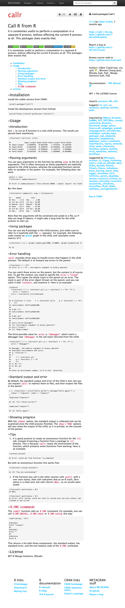

‘WebDriver’ Client for ‘PhantomJS’


A client for the ‘WebDriver’ ‘API’. It allows driving a (probably headless) web browser, and can be used to test web applications, including ‘Shiny’ apps. In theory it works with any ‘WebDriver’ implementation, but it was only tested with ‘PhantomJS’.
Installation
install.packages("webdriver")Usage
PhantomJS
webdriver uses PhantomJS as a headless web browser. (In theory in works with other WebDriver clients as well.) You can use the install_phantomjs() function to download and install PhantomJS on your system. Alternatively an installation that is in the PATH is sufficient.
The run_phantomjs() function starts PhantomJS, and waits until it is ready to serve queries. It returns a process object that you can terminate manually, and the port on which PhantomJS is listening.
pjs <- run_phantomjs()
pjsSessions
Use the Session class to connection to a running PhantomJS process. One process can save multiple sessions, and the sessions are independent of each other.
ses <- Session$new(port = pjs$port)Once a session is established, you can manipulate the headless web browser through it:
ses$go("https://r-pkg.org/pkg/callr")
ses$getUrl()
ses$getTitle()You can also take a screenshot of the whole web page, and show it on R’s graphics device, or save it to a PNG file:
ses$takeScreenshot()
HTML elements
The Session object has two methods to find HTML elements on the current web page, which can then be further manipulated: findElement() and findElements(). They work with CSS or XPATH selectors, and also with (possibly partial) HTML text.
install <- ses$findElement(".install-package")
install$getName()
install$getText()If you have an HTML element that can receive keyboard keys, you can use the sendKeys() method to send them. The key list helps with sending special, characters, e.g. key$enter corresponds to pressing ENTER. For example we can type into a search box:
search <- ses$findElement("#cran-input")
search$sendKeys("html", key$enter)
ses$getUrl()
ses$getTitle()
ses$takeScreenshot()
JavaScript
The executeScript() method of a Session object runs arbitrary JavaScript in the headless browser. It puts the supplied code into the body of a JavaScript function, and the function will receive the additional arguments, in its arguments array. Element objects as arguments are automatically converted to the corresponding DOM elements in the browser.
The JavaScript function can return values to R. Returned HTML elements are automatically converted to Element objects.
ses$executeScript("return 42 + 'foobar';")
search2 <- ses$executeScript("return document.getElementById('cran-input');")
search2$getName()Element objects also have an executeScript() method, which works the same way as the Session method, but it automatically supplies the HTML element as the first argument of the JavaScript function.
executeScript() works synchronously. If you need asynchronous execution, you can use the executeScriptAsync() function.